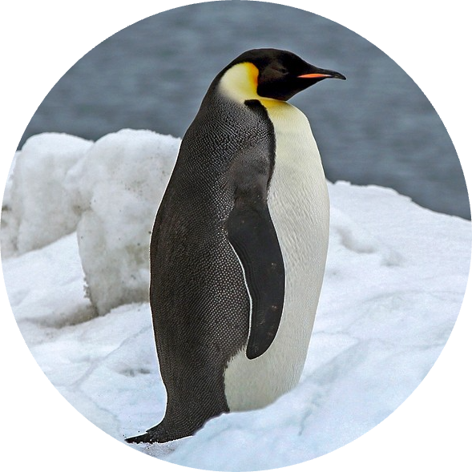

|  |
I am an lecturerand a gradute at the Institute of Learning Sciences and Technologies,
National Tsing Hua University (NTHU), Taiwan. |
Contact Me! |
|---|
Master of Learning Sciences and Technologies @ National Tsing Hua University
Master of Interaction Design and Electric Arts @ The University of Sydney
University Lecturer @ National Tsing Hua University
Design Thinking Lecturer Freelancer
English Lecturer @ Major English Institutes
| Research | Computer | Languages | Others | ||||
|---|---|---|---|---|---|---|---|
| Design Thinking | 🎖🎖🎖🎖🎖 | Python | 🎖🎖🎖🎖🎖 | Traditional and Simplified Chinese (Native) | 🎖🎖🎖🎖🎖 | Customer Relationship Management | 🎖🎖🎖🎖🎖 |
| Technology-Assisted Vocabulary Learning | 🎖🎖🎖🎖🎖 | Web Development | 🎖🎖🎖🎖🎖 | Taiwanese (Native) | 🎖🎖🎖🎖🎖 | Sales Skills | 🎖🎖🎖🎖🎖 |
| Learning Sciences | 🎖🎖🎖🎖 | English (Professional) TOEIC 990, IELTS 7.5 | 🎖🎖🎖🎖 | Communication | 🎖🎖🎖🎖🎖 | ||
| Higher Education | 🎖🎖🎖🎖 | German(Conversational) B1 | 🎖🎖🎖 | Negotiation | 🎖🎖🎖🎖🎖 | ||
| Mindfulness | 🎖🎖🎖 |
| Name | Position | Contact | |
|---|---|---|---|
| Liao Guan-Ze | Chair of ILST; Supervisor | gzliao@mx.nthu.edu.tw | +886-3-5715131 Ext.35166 |
| Hsieh Hsiao-Chin | Professor @ NTHU | hhc@mx.nthu.edu.tw | |
| Dr Naseem Ahmadpour | Professor @ USyd | naseem.ahmadpour@sydney.edu.au |